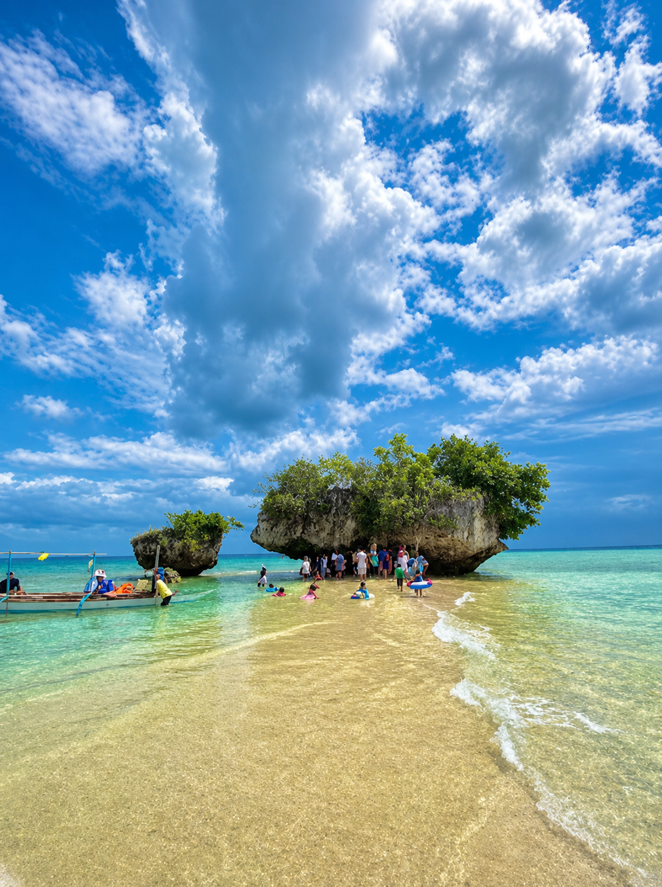
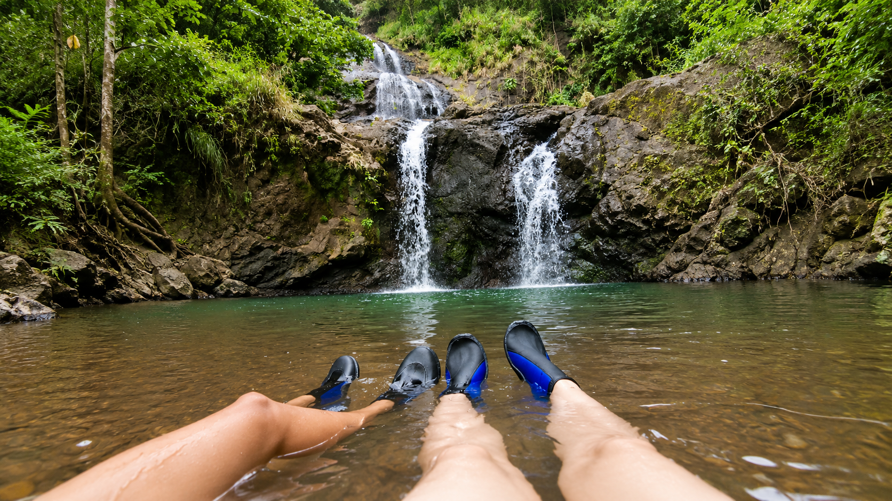
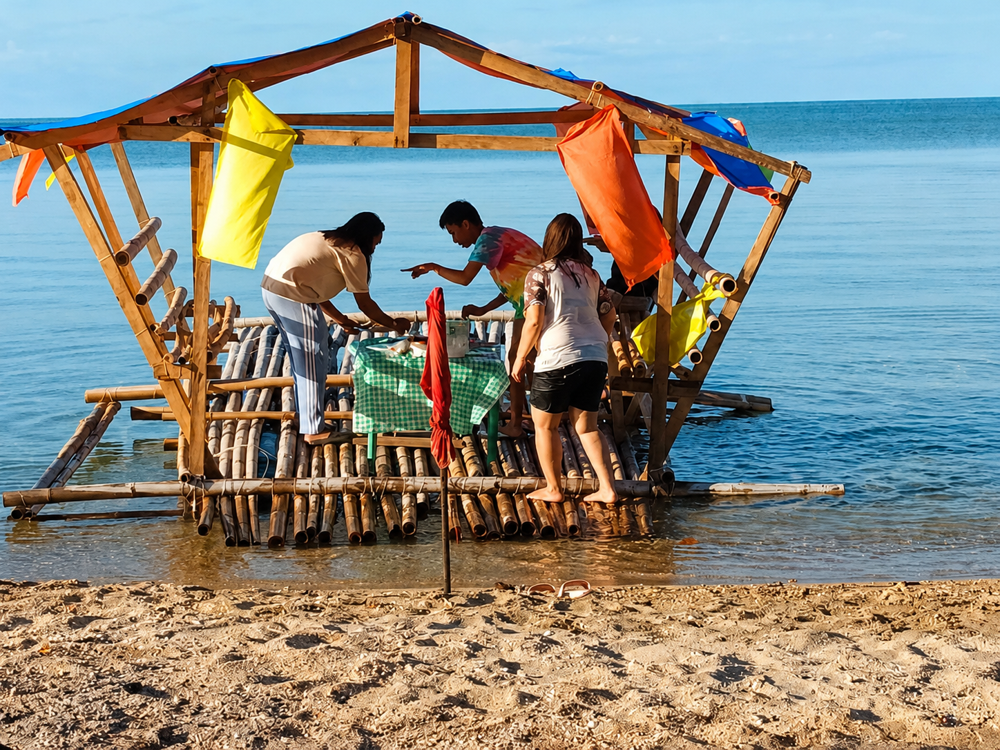
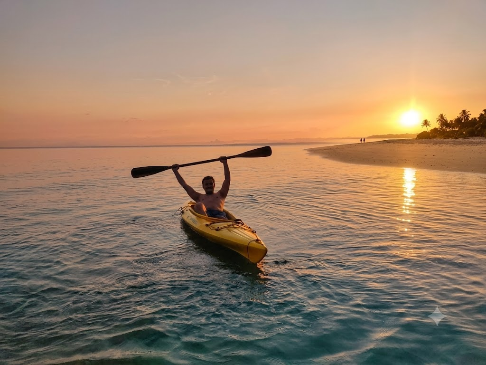
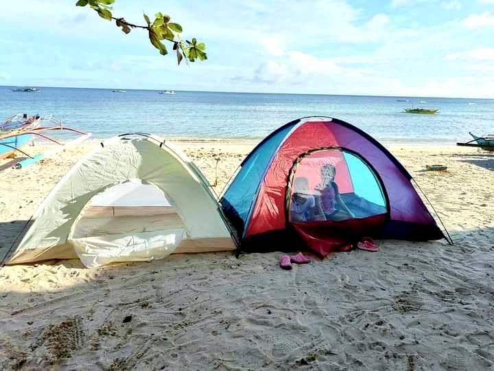
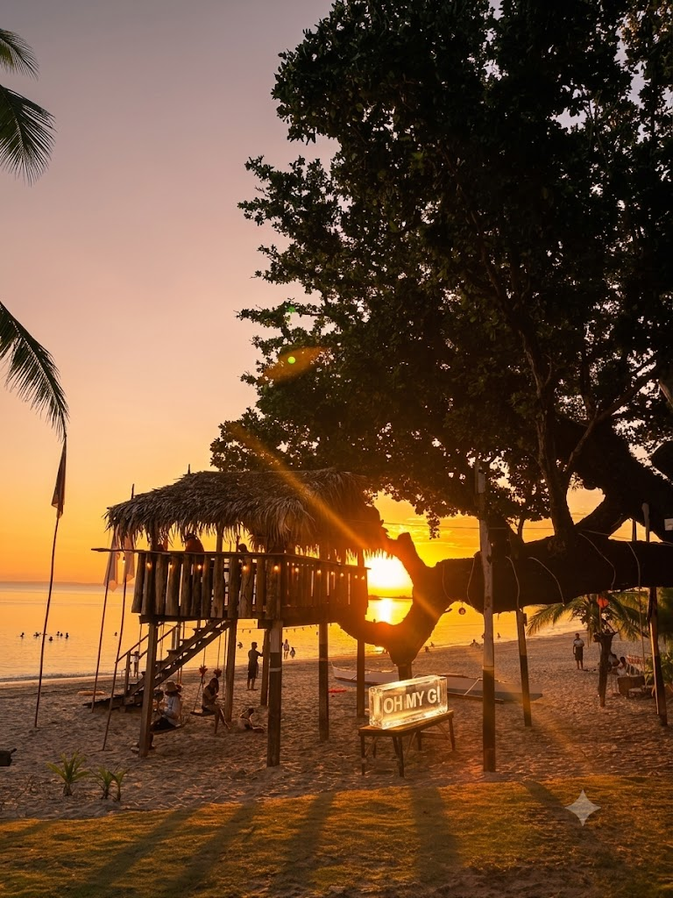
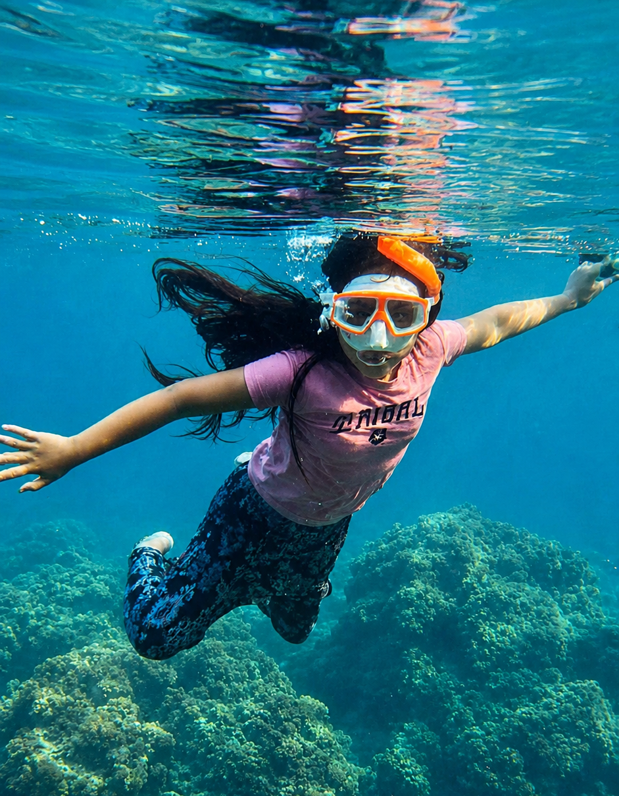

Island Hopping
Hire a local bangka and explore the cluster of smaller islands and sandbars surrounding Patnanungan. Each stop reveals a different character from sheltered lagoons to open rocky shores.

Swimming
The calm, clear waters of Patnanungan's beaches are ideal for swimming. White Beach and Pulang Lupa Beach both offer gentle surf and great visibility into the sandy bottom below.

Balsa Picnic
A balsa picnic is a simple beach activity where people eat, relax, and bond on a floating bamboo raft near the shore. It is a fun way to enjoy the sea, fresh air, and island view.

Kayaking
Outrigger bangka rides are a quintessential Patnanungan experience. Whether fishing or crossing to a neighboring cove, life on the water connects you to the island's soul.

Fishing
Join local fishermen on an early morning fishing run the sea around Patnanungan is rich with tuna, lapu-lapu, and other reef species.

Beach Camping
Sleep under the stars on a stretch of white sand. The absence of light pollution makes the night sky truly extraordinary.

Sunset Viewing
Compra Beach is the island's prime sunset spot. Arrive thirty minutes before dusk and watch the sky perform silhouettes of fishing boats make iconic shots.

Snorkeling
Snorkeling is a water activity where you swim and look underwater using a mask and snorkel. It is a simple way to see corals, fish, and the beauty of the sea.